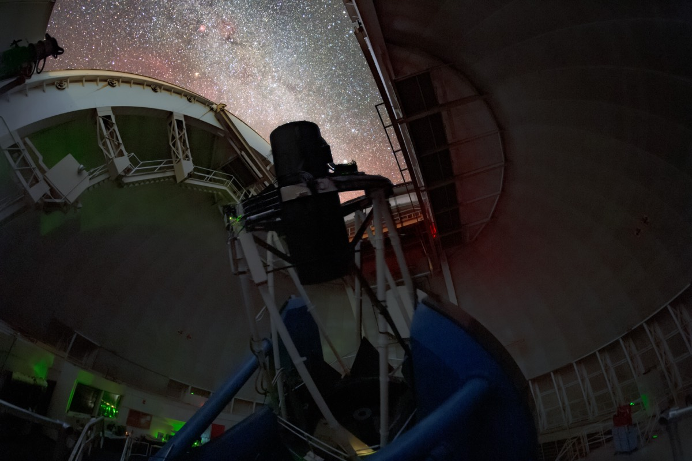
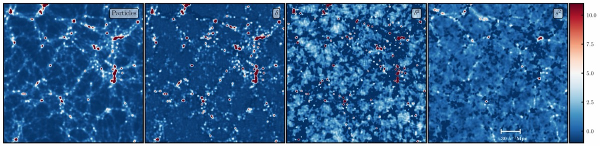
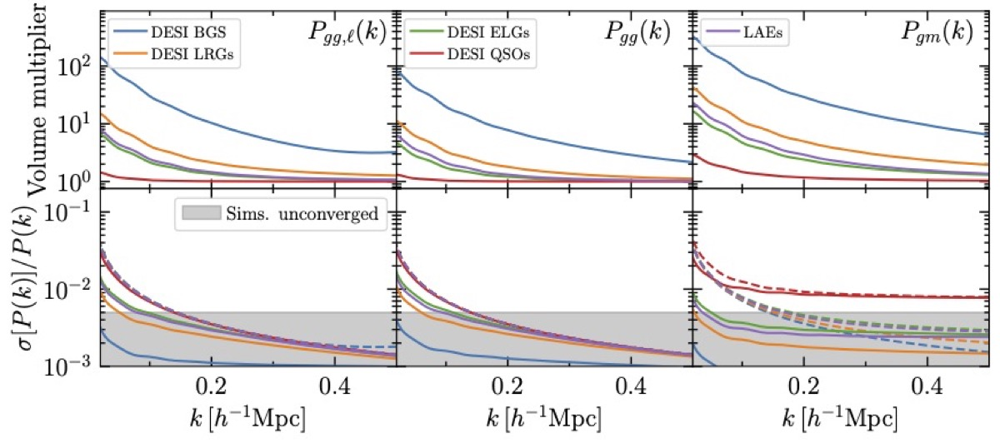
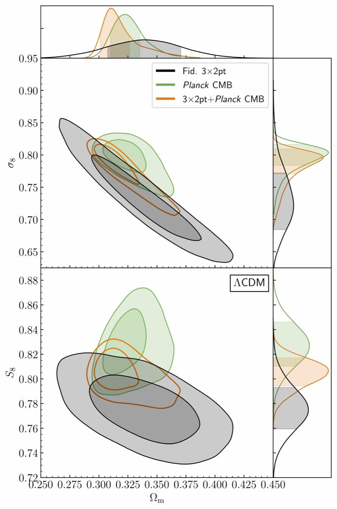
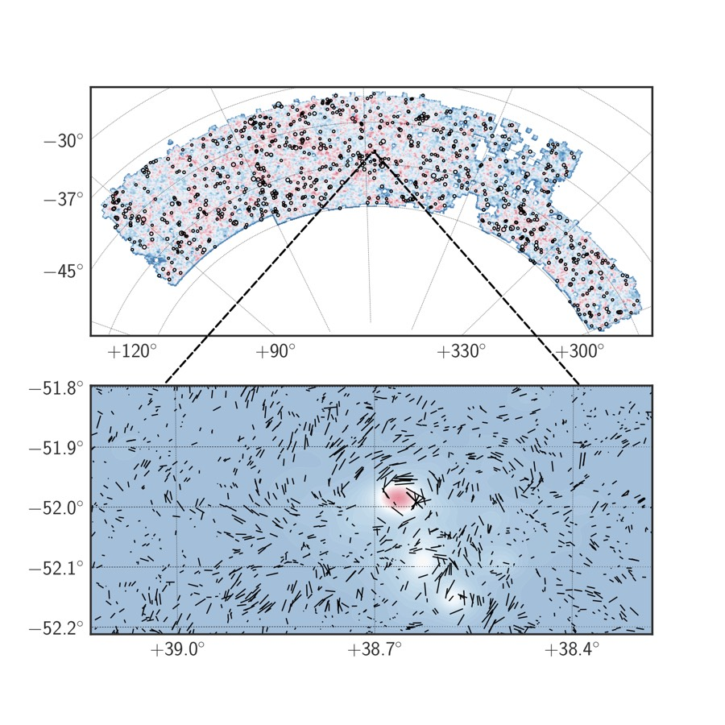

Research
About 95% of the universe is made of dark matter and dark energy, which we can't see directly. We learn about them from how matter clumps together over cosmic time, which galaxy surveys measure by mapping where galaxies are and how their light is bent by gravity. My work spans that whole chain: analyzing survey data, building theoretical models accurate enough to interpret it, and running simulations to test and calibrate those models.
DESI × weak lensing
Measuring how cosmic structure has grown by combining 3D galaxy maps with the bending of light by gravity.

DESI measures precise distances to tens of millions of galaxies. Weak gravitational lensing is the slight distortion of light from distant objects, either background galaxies or the cosmic microwave background (CMB), as it passes through intervening matter. Cross-correlating the two shows how much matter surrounds DESI galaxies at different points in cosmic history. That growth history is a direct test of dark energy and general relativity.
Using perturbation theory and hybrid effective field theory models, we combined DESI galaxies with lensing from the Dark Energy Survey and found a clustering amplitude consistent with CMB predictions. We also found strong evidence that galaxy intrinsic alignments, a contaminant in lensing, evolve differently from what is usually assumed. Cross-correlating DESI luminous red galaxies with CMB lensing from Planck and ACT measures the amount of structure in the more distant universe. With the same lensing maps, we also made a measurement of structure growth from galaxy magnification, the lensing-induced brightening of background galaxies.
Key papers: DESI LRGs × Planck CMB lensing (2021) · DESI LRGs × Planck and ACT CMB lensing (2024) · Not all lensing is low (2024) · DESI galaxies × CMB lensing and magnification (2025)
Steel: Spectroscopically Calibrated Source Samples
Fewer, better-measured galaxies can deliver the same cosmology from weak lensing, with far smaller systematic errors.
Weak lensing surveys measure the shapes of huge numbers of faint galaxies. Their precision is limited less by the number of galaxies than by two kinds of systematic uncertainty:
- Distances: exactly how far away the source galaxies are (their redshift distribution).
- Astrophysics: galaxy shapes being lined up by their local environment rather than by lensing (intrinsic alignments), and processes like gas heated by supermassive black holes reshaping the distribution of matter on small scales.
We showed that once these are modeled realistically, the information in lensing analyses saturates on fairly large scales. Source samples about 5 galaxies per square arcminute, much sparser than current surveys, lose almost no constraining power. For a sample that sparse, a wide-field spectrograph like DESI can observe a large, representative subset. Those spectra directly calibrate the sample's distances and intrinsic alignments, leaving far fewer uncertainties to model.
Key paper: Steeling weak lensing source galaxy samples against systematics using wide field spectroscopy (2026)
Effective field theory for galaxies and lensing
Fast, accurate predictions that use more of the data while staying robust to small-scale physics we don't fully understand.

Models of large-scale structure usually come in two kinds. Perturbation theory is fast and flexible but only works on large scales. N-body simulations, which evolve billions of particles under gravity, capture small scales but are expensive. With collaborators I developed hybrid effective field theory (HEFT), which combines the two. Our public Aemulus ν emulator, which includes massive neutrinos, is used in DESI, DES and ACT analyses.
More recently we introduced lensing counterterms, which separate the large-scale cosmological signal in lensing from uncertain small-scale effects such as feedback from black holes, without discarding data. Applied to public DES data at two-loop order, this gives competitive constraints and no sign of the so-called S8 tension, even when dark energy is allowed to evolve. We have also worked out how many simulations future HEFT emulators need.
Key papers: HEFT (2021) · Aemulus ν (2023) · Lensing counterterms (2025) · Two-loop cosmic shear (2026)
Zel'dovich control variates
Removing most of the noise from cosmological simulations with a simple, cheap companion calculation.

Simulations cover only finite patches of the universe, so their predictions carry statistical noise. We pair each full simulation with a Zel'dovich approximation realization of the same initial conditions, a much simpler model in which particles move in straight lines. Its statistics can be computed exactly, and it is highly correlated with the full simulation. That lets us subtract most of the noise, using a classic statistical technique called control variates. The method is near-optimal and is used in DESI analyses.
Key papers: Kokron et al. (2022) · DeRose et al. (2022)
The Dark Energy Survey
Precision cosmology from the shapes and positions of hundreds of millions of galaxies.

DES imaged 5,000 square degrees of sky to measure weak lensing and galaxy clustering. I was heavily involved in the Year 3 cosmology analysis, including validating it on simulations before the real data were revealed. It produced some of the tightest constraints yet on the growth of cosmic structure.
Simulations and machine learning
Realistic simulated universes and fast surrogate models that make modern analyses possible.

Testing an analysis requires simulated skies where the right answer is known. I built the Buzzard mock catalogs used to validate DES and helped develop their successor, Cardinal. I also led the Aemulus simulation suites. I also use machine learning to speed up theory calculations, for example neural-network emulators and the differentiable JAX code gholax. This makes it practical to explore many cosmological models.
See code & data for public releases.